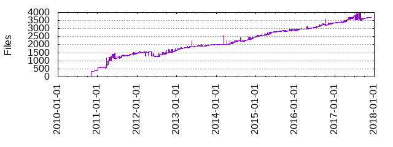

Files
- Total files
- 3706
- Total lines
- 254548
- Average file size
- 2554.02 bytes

| Extension | Files (%) | Lines (%) | Lines/file |
|---|
| 164 (4.43%) | 6898 (2.71%) | 42 |
| 0 | 3 (0.08%) | 864 (0.34%) | 288 |
| 03_quagga | 1 (0.03%) | 3 (0.00%) | 3 |
| 03_radvd | 1 (0.03%) | 2 (0.00%) | 2 |
| 03_samba | 1 (0.03%) | 3 (0.00%) | 3 |
| 03_squid | 1 (0.03%) | 3 (0.00%) | 3 |
| 04_apache2 | 1 (0.03%) | 3 (0.00%) | 3 |
| 1 | 2 (0.05%) | 88 (0.03%) | 44 |
| 58_radiusd | 1 (0.03%) | 3 (0.00%) | 3 |
| 6 | 1 (0.03%) | 1 (0.00%) | 1 |
| 9 | 1 (0.03%) | 1 (0.00%) | 1 |
| 99_atop | 1 (0.03%) | 1 (0.00%) | 1 |
| 99_vblade | 1 (0.03%) | 1 (0.00%) | 1 |
| 99_vsftpd | 1 (0.03%) | 1 (0.00%) | 1 |
| MIT | 10 (0.27%) | 170 (0.07%) | 17 |
| bb | 1407 (37.97%) | 40432 (15.88%) | 28 |
| bbappend | 2 (0.05%) | 7 (0.00%) | 3 |
| bbclass | 17 (0.46%) | 859 (0.34%) | 50 |
| c | 3 (0.08%) | 2544 (1.00%) | 848 |
| cgi | 1 (0.03%) | 10 (0.00%) | 10 |
| cnf | 1 (0.03%) | 25 (0.01%) | 25 |
| common | 1 (0.03%) | 163 (0.06%) | 163 |
| conf | 59 (1.59%) | 8877 (3.49%) | 150 |
| cron | 1 (0.03%) | 5 (0.00%) | 5 |
| d | 2 (0.05%) | 182 (0.07%) | 91 |
| d_openwbem | 1 (0.03%) | 7 (0.00%) | 7 |
| db | 1 (0.03%) | 531 (0.21%) | 531 |
| debian | 1 (0.03%) | 119 (0.05%) | 119 |
| default | 8 (0.22%) | 64 (0.03%) | 8 |
| desktop | 4 (0.11%) | 36 (0.01%) | 9 |
| diff | 19 (0.51%) | 9407 (3.70%) | 495 |
| example | 1 (0.03%) | 90 (0.04%) | 90 |
| fdi | 3 (0.08%) | 28562 (11.22%) | 9520 |
| ftpusers | 1 (0.03%) | 15 (0.01%) | 15 |
| gz | 1 (0.03%) | 4 (0.00%) | 4 |
| h | 3 (0.08%) | 4229 (1.66%) | 1409 |
| in | 7 (0.19%) | 530 (0.21%) | 75 |
| inc | 175 (4.72%) | 5618 (2.21%) | 32 |
| inetutils | 5 (0.13%) | 96 (0.04%) | 19 |
| init | 25 (0.67%) | 2519 (0.99%) | 100 |
| js | 1 (0.03%) | 2 (0.00%) | 2 |
| list | 1 (0.03%) | 1 (0.00%) | 1 |
| logrotate | 1 (0.03%) | 39 (0.02%) | 39 |
| lua | 1 (0.03%) | 46 (0.02%) | 46 |
| m4 | 5 (0.13%) | 838 (0.33%) | 167 |
| make | 2 (0.05%) | 346 (0.14%) | 173 |
| mk | 5 (0.13%) | 457 (0.18%) | 91 |
| modes | 5 (0.13%) | 72 (0.03%) | 14 |
| mof | 1 (0.03%) | 21 (0.01%) | 21 |
| netkit | 3 (0.08%) | 64 (0.03%) | 21 |
| oe | 2 (0.05%) | 210 (0.08%) | 105 |
| pam | 5 (0.13%) | 49 (0.02%) | 9 |
| pamd | 1 (0.03%) | 19 (0.01%) | 19 |
| patch | 1594 (43.01%) | 132177 (51.93%) | 82 |
| pc | 2 (0.05%) | 23 (0.01%) | 11 |
| pl | 1 (0.03%) | 69 (0.03%) | 69 |
| png | 4 (0.11%) | 348 (0.14%) | 87 |
| policy | 1 (0.03%) | 20 (0.01%) | 20 |
| pptp | 1 (0.03%) | 30 (0.01%) | 30 |
| py | 1 (0.03%) | 412 (0.16%) | 412 |
| resolvconf | 1 (0.03%) | 84 (0.03%) | 84 |
| rules | 5 (0.13%) | 2975 (1.17%) | 595 |
| sample | 3 (0.08%) | 62 (0.02%) | 20 |
| service | 85 (2.29%) | 1122 (0.44%) | 13 |
| sh | 13 (0.35%) | 658 (0.26%) | 50 |
| smartd | 1 (0.03%) | 112 (0.04%) | 112 |
| socket | 2 (0.05%) | 22 (0.01%) | 11 |
| sysconfig | 1 (0.03%) | 5 (0.00%) | 5 |
| tmpfiles | 1 (0.03%) | 1 (0.00%) | 1 |
| trm | 1 (0.03%) | 483 (0.19%) | 483 |
| txt | 12 (0.32%) | 556 (0.22%) | 46 |
| user_list | 1 (0.03%) | 20 (0.01%) | 20 |
| utils | 1 (0.03%) | 45 (0.02%) | 45 |
| xml | 1 (0.03%) | 492 (0.19%) | 492 |
| xpm | 1 (0.03%) | 43 (0.02%) | 43 |
| zip | 1 (0.03%) | 207 (0.08%) | 207 |